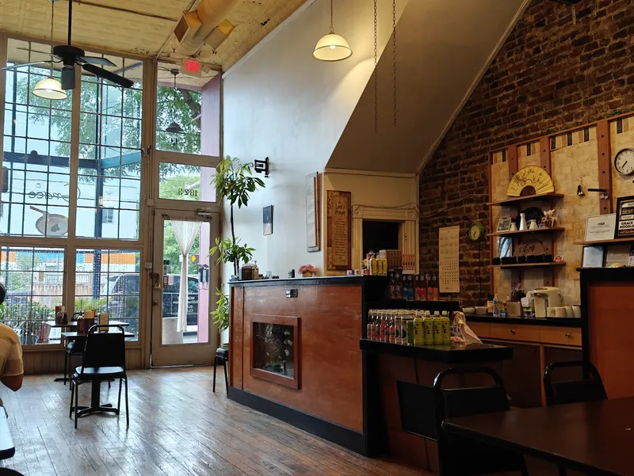

Shockoe Bottom, Richmond
Hours & visit
1823 E Main St
Richmond, VA 23223
On East Main Street in Shockoe Bottom, near the 17th Street Market.
Hours
| Monday | 11 AM – 9 PM |
|---|---|
| Tuesday | 11 AM – 9 PM |
| Wednesday | 11 AM – 9 PM |
| Thursday | 11 AM – 9 PM |
| Friday | 11 AM – 9 PM |
| Saturday | 11 AM – 9 PM |
| Sunday | Closed |
Dine in at the counter-service shop, or order pickup online.
